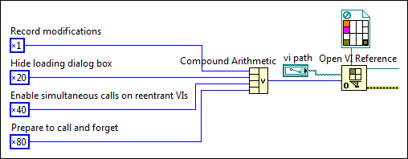

The options input of the Open VI Reference function accepts a combination of option flags that each specify a particular characteristic or behavior of the reference output. Each option flag is represented by a unique hexadecimal number. Because the option flags have a numeric representation, you can combine several option flags into one number to specify multiple characteristics for the returned VI reference.
To combine multiple option flags into one value for the options input of the Open VI Reference function, create the following block diagram using your desired option flags. Refer to the procedure for details.

Complete the following steps to combine multiple option flags into one value for the options input.
Determine which characteristics you want to assign to the reference output of the Open VI Reference function.
 Add to the block diagram.
Add to the block diagram. Find on the palette.
Find on the palette.